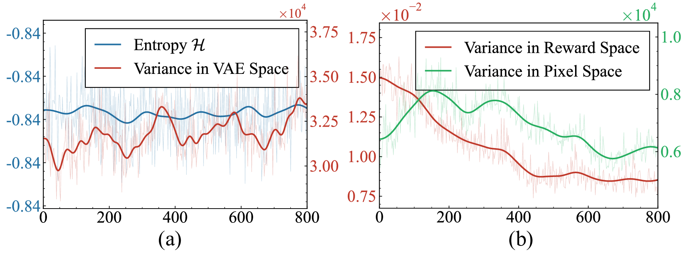
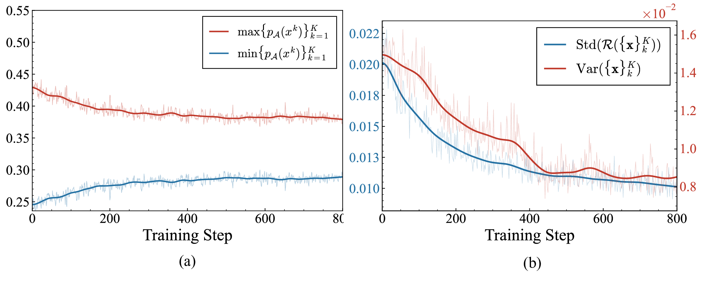
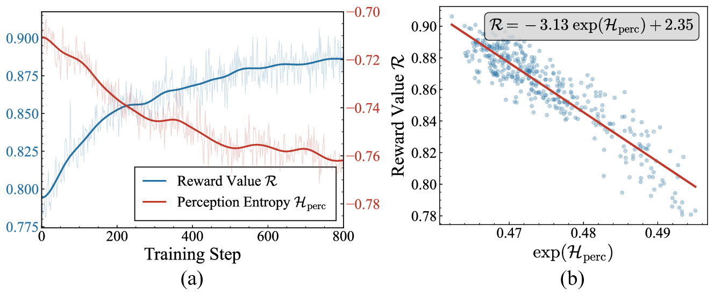
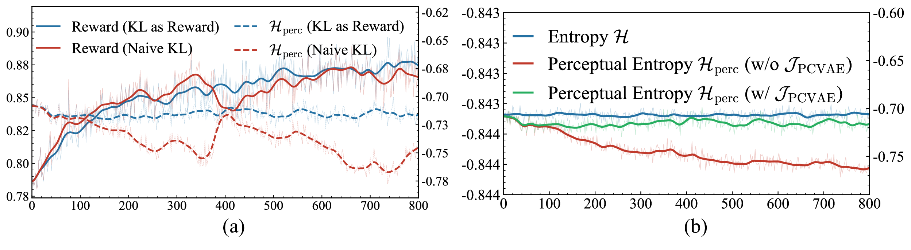
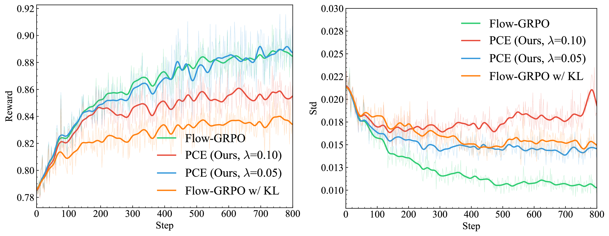
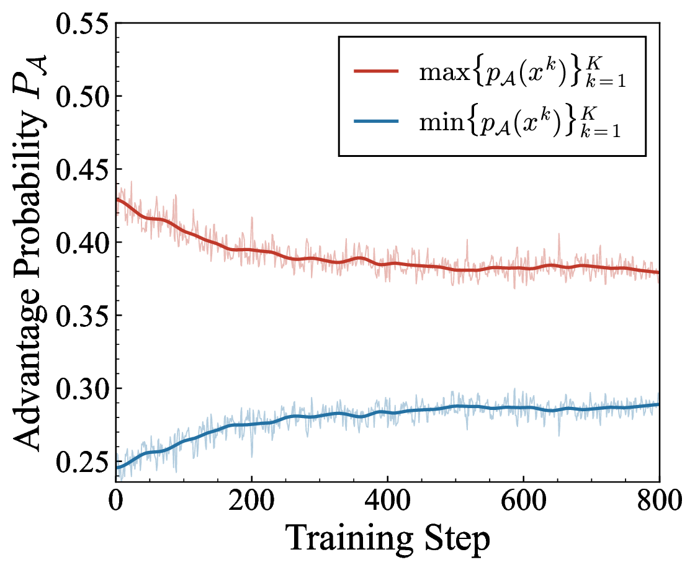
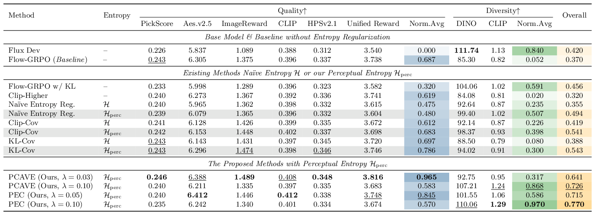
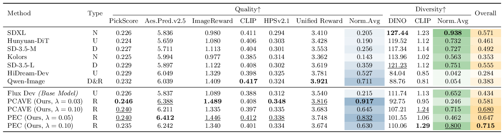

Visual Results

Visual comparison on FLUX.dev. Our methods (PEC & PCVAE) maintain diverse outputs across prompts while significantly improving quality, unlike the baseline which collapses to a single mode.
TL;DR: We reveal a paradox in flow-based RLHF: diversity collapses while policy entropy stays constant. We theoretically explain this through the fixed noise schedule and the mode-seeking nature of policy gradients, then introduce perceptual entropy and two regularized strategies (PEC & PCVAE) that achieve an overall score of 0.734 (vs. 0.366 baseline) while reaching a diversity average of 0.989 (vs. 0.047 baseline) on FLUX.dev and SD3.5-M.
Visual comparison on FLUX.dev. Our methods (PEC & PCVAE) maintain diverse outputs across prompts while significantly improving quality, unlike the baseline which collapses to a single mode.
RLHF is widely used to align flow-matching text-to-image models with human preferences, but often leads to severe diversity collapse after fine-tuning. In RL, diversity is often assumed to correlate with policy entropy, motivating entropy regularization. However, we show this intuition breaks in flow models: policy entropy remains constant, even while perceptual diversity collapses. We explain this mismatch both theoretically and empirically: the constant entropy arises from the fixed, pre-defined noise schedule, while the diversity collapse is driven by the mode-seeking nature of policy gradients. As a result, policy entropy fails to prevent the model from converging to a narrow high-reward region in the perceptual space. To this end, we introduce perceptual entropy that captures diversity in a perceptual space and maintains the property of standard entropy. Building upon this insight, we propose two entropy-regularized strategies, Perceptual Entropy Constraint (PEC) and Perceptual Constraints on Generation Space (PCVAE), to preserve perceptual diversity and improve the quality. Experiments across two base models (FLUX.dev, SD3.5-M), neural and rule-based rewards, and three perceptual spaces (PickScore, DINO, CLIP) demonstrate consistent gains in the quality-diversity trade-off; PEC achieves the best overall score of 0.734 (vs. baseline's 0.366); a complementary setting of PEC further reaches a diversity average of 0.989 (vs. baseline's 0.047).
In LLM RL, an entropy decrease directly signals diversity loss. But in flow models, we observe a striking paradox: policy entropy stays constant while perceptual diversity collapses. This means existing entropy-based regularization methods fundamentally cannot capture or prevent diversity collapse in flow-based RLHF.

Figure 1. Training-time metrics. (a) Policy entropy and variance in VAE space — both remain constant. (b) Variance in pixel and reward space — diversity really collapses despite constant policy entropy.
We prove that the policy entropy in flow-based RL is independent of model parameters $\theta$. The key insight: in flow models, the reverse transition $p_\theta(\mathbf{x}_{t-1}\mid\mathbf{x}_t) \sim \mathcal{N}(\mathbf{x}_{t-1}; \mu_\theta, \sigma_t^2\,\mathrm{d}t\,\mathbf{I})$ has variance fixed by the prescribed noise schedule $\sigma_t$, while only the mean $\mu_\theta$ is learned. Since entropy depends on the shape (variance), not the location (mean), it remains constant:
We trace the collapse to the mode-seeking nature of online policy gradients: the policy is driven to concentrate probability on high-reward regions in reward space, so a multi-peak pretrained distribution can collapse into a single-peak perceptual distribution. This motivates an RLHF framework that encourages broad coverage of multiple high-reward regions in perceptual space, rather than convergence to a single peak.

Figure 2. (a) Maximum and minimum advantage probabilities converge. (b) Reward standard deviation decreases alongside sample variance, supporting the mode-seeking convergence onto a narrow high-reward region.
Since standard entropy cannot capture diversity collapse in flow models, we introduce perceptual entropy $\mathcal{H}_{\mathrm{perc}}$, which measures diversity in the representation space of reward models rather than the VAE latent space. We further establish an empirical entropy mechanism analogous to LLMs:

Figure 3. Relationship between Reward and Perceptual Entropy, validating the empirical entropy mechanism for flow models.
Perceptual entropy is proportional to the variance of samples in perceptual space: $\mathcal{H}_{\text{perc}} \propto \mathrm{Var}(\{\phi(\mathbf{x}_{t-1}^k)\})$. Unlike standard entropy, it faithfully tracks diversity collapse and aligns with existing entropy-based methods from LLMs.
PEC incorporates perceptual entropy directly into the reward function, treating it as a reward component that encourages the model to maintain high perceptual diversity:
PCVAE aligns the collapsed perceptual distribution with the constant VAE distribution by minimizing their KL divergence, incorporated as a unified reward:

Figure 4. (a) Naïve KL (red) vs. KL as Reward (blue) — our unified reward formulation provides stable optimization. (b) Entropy with (blue) and without (red) PCVAE.

Figure 5. Training curves comparing Flow-GRPO, Flow-GRPO+KL, and PEC.

Training reward curves showing stable optimization with our methods.
We compare against various entropy-based regularization methods on FLUX.dev and SD3.5-M, with PickScore, DINO, and CLIP perceptual encoders. Our methods (PEC & PCVAE) using perceptual entropy consistently outperform standard entropy variants across quality and diversity metrics. PEC achieves the best overall score of 0.734, and a complementary setting of PEC further reaches a diversity average of 0.989.

Table 1. Comparison with different entropy-based regularization methods. Bold = best, underline = second best.
We compare against state-of-the-art pretrained models including SDXL, SD-3.5, HiDream-Dev, and Qwen-Image. Our methods achieve the best quality-diversity trade-off.

Table 2. Comparison with SoTA pretrained models. Type: N = None, U = Unknown, D = DPO, R = Reinforcement Fine-Tuning.

Extended diversity visualization across various prompts, showing consistent improvements in both quality and diversity.
@article{tan2026perceptualentropy,
title={When Policy Entropy Constraint Fails: Preserving Diversity in Flow-based RLHF via Perceptual Entropy},
author={Tan, Xiaofeng and Liu, Jun and Gao, Bin-Bin and Fan, Yuanting and Jiang, Xi and Wang, Chengjie and Wang, Hongsong and Zheng, Feng},
journal={arXiv preprint},
year={2026}
}